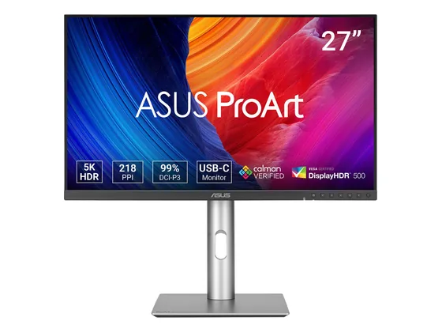
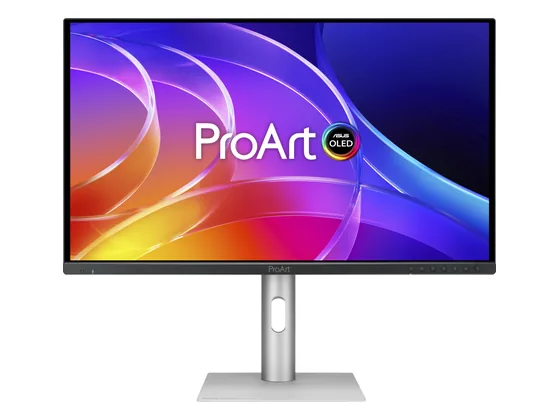

#1notre choixLe choix de la bande

27" 4K UHD · IPS · USB-C 96 W
Le meilleur rapport qualité-prix pour créer : dalle 4K bien calibrée, large gamme de couleurs, USB-C 96 W et pied réglable en tous sens.
7,3/103 notes presse
env. 330 €prix indicatif#2sur 10L'auto-calibrant

27" 4K UHD · IPS · 160 Hz · sonde intégrée
Un 27 pouces 4K doté d'une sonde de calibration intégrée qui se recalibre seul, avec une excellente précision des couleurs et 160 Hz.
9,0/102 notes presse
2 tests notés seulementenv. 570 €prix indicatif#3sur 10La 6K

32" 6K · IPS · Thunderbolt 4
Une dalle 6K sur 32 pouces à prix inédit, avec Thunderbolt 4 et un pied très fonctionnel : une netteté de texte et de photo spectaculaire.
8,0/103 notes presse
env. 1 120 €prix indicatif#4sur 10Le ProArt d'entrée

27" QHD · IPS · 75 Hz
Le ProArt le plus abordable : QHD calibré d'usine (sRGB), pied réglable et connectique complète. Idéal pour débuter en retouche.
8,0/102 notes presse
2 tests notés seulementenv. 220 €prix indicatif#5sur 10L'OLED du créateur

32" 4K UHD · QD-OLED · 240 Hz · Thunderbolt 4
Un QD-OLED 4K calibré pour la création, excellent en SDR comme en HDR, avec Thunderbolt 4. Plus cher que les OLED gaming équivalents.
7,0/102 notes presse
2 tests notés seulementenv. 980 €prix indicatif#6sur 10Le contraste IPS Black

27" QHD · IPS Black · 120 Hz
La dalle IPS Black de Dell, plus contrastée qu'un IPS classique, avec 98 % du DCI-P3 et 120 Hz : un très bon écran pour la photo et le travail.
Testé2 tests, sans note chiffrée
env. 260 €prix indicatif#7sur 10Le Mac-friendly

27" 4K UHD · IPS · Thunderbolt 4
Un 4K de 27 pouces couvrant à la fois le DCI-P3 et l'Adobe RGB, avec Thunderbolt 4 et un mode couleurs Mac : très précis, un peu cher.
Testé2 tests, sans note chiffrée
env. 570 €prix indicatif#8sur 10La référence pro

27" QHD · IPS · sonde intégrée
L'écran des laboratoires photo : sonde de calibration intégrée, uniformité contrôlée, garantie longue. Une précision de référence, à un prix de pro.
Testé2 tests, sans note chiffrée
env. 1 670 €prix indicatif#9sur 10La 5K pour Mac

27" 5K · IPS · USB-C
Une dalle 5K de 27 pouces, la même finesse que les écrans Apple, avec une large gamme de couleurs : l'alternative au Studio Display.
Testé1 test, sans note chiffrée
env. 540 €prix indicatif#10sur 10L'OLED 27" pour créer

26,5" 4K UHD · QD-OLED · 120 Hz · USB-C
Un QD-OLED 4K de 26,5 pouces au tarif contenu, avec HDR, 120 Hz, KVM et pied complet : une alternative OLED au Studio Display.
Testé1 test, sans note chiffrée
env. 620 €prix indicatif